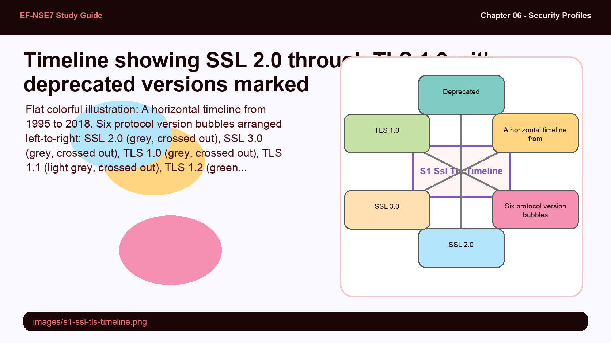
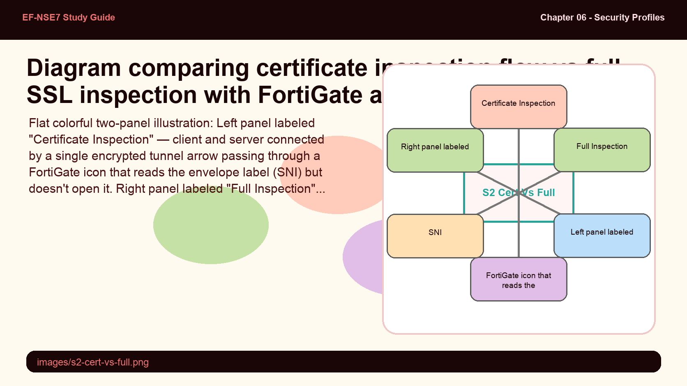
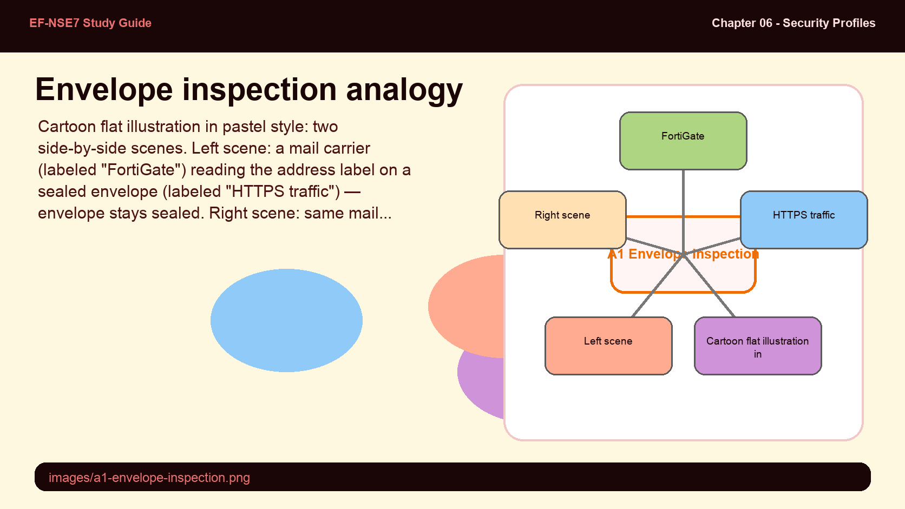
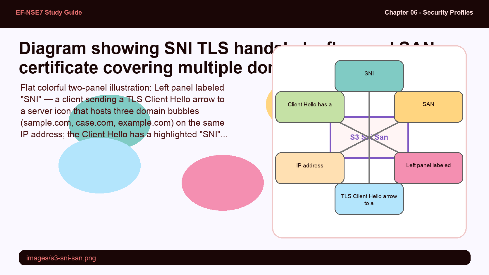
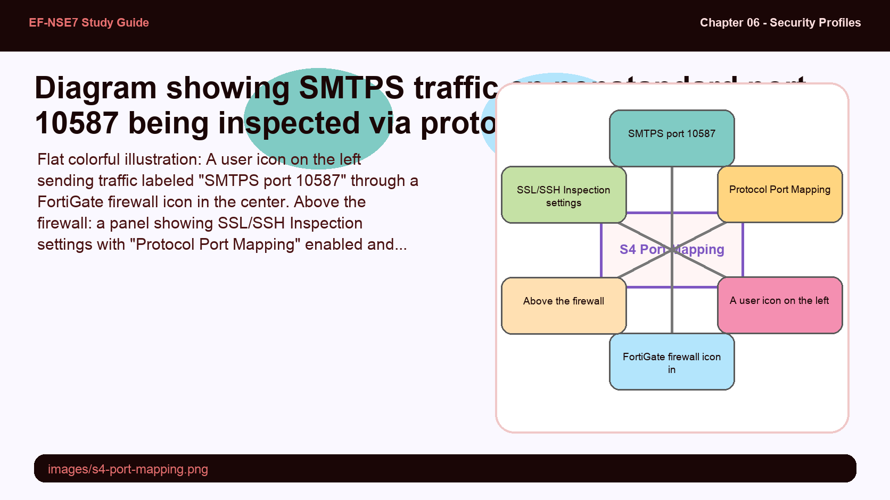

SSL and TLS are both "secure transport" protocols, but they are not the same thing. SSL has known vulnerabilities and has been deprecated — yet the industry still calls things "SSL inspection." Understanding why TLS replaced SSL, and which versions are safe, helps you make real configuration decisions.
- SSL 2.0, 3.0, TLS 1.0, and TLS 1.1 are all deprecated. Why does FortiGate still need to know about them, and what risk does supporting them introduce?
- HTTP/3 uses TLS 1.3 by default over UDP (QUIC). How does this affect a firewall's ability to inspect web traffic compared to HTTP/2 over TCP?
SSL to TLS — The Evolution of Secure Transport

SSL versions are deprecated; TLS 1.2 and 1.3 are the only versions FortiGate should allow in production.
Common application protocols — HTTP, SMTP, and FTP — have encrypted counterparts known as HTTPS, SMTPS, and FTPS. The "S" suffix indicates the protocol is secured using TLS (Transport Layer Security), the modern successor to SSL.
SSL has multiple known cryptographic vulnerabilities and is deprecated. TLS 1.2 (RFC 5246, 2008) is recommended for broad compatibility, while TLS 1.3 (RFC 8446, 2018) offers improved security and faster connection setup by reducing round trips. SSL 2.0, SSL 3.0, TLS 1.0, and TLS 1.1 should never be used in enterprise environments.
A TLS cipher suite bundles four algorithms in one string: the protocol, key exchange algorithm, authentication algorithm, encryption algorithm, and hash algorithm. For example: TLS_ECDHE_RSA_WITH_AES_128_GCM_SHA256 identifies each component. The TCP three-way handshake (SYN → SYN-ACK → ACK) must complete before the TLS handshake begins.
In HTTP/3, TLS 1.3 is mandatory and runs over QUIC (UDP) rather than TCP. HTTP/1 treats TLS as optional, HTTP/2 treats it as optional but common, and HTTP/3 enforces it by default. For enterprise firewalls, this layering matters: flow-based and proxy-based inspection operate on TCP sessions, so HTTP/3 over UDP may bypass inspection.
config system global
set admin-https-ssl-versions tlsv1-2 tlsv1-3
end
# Display all TLS-related settings
show full | grep -f tlsmin-allowed-ssl-version and unsupported-ssl-version can only be configured through the CLI, not the GUI. Settings also apply to SMTPS, POP3S, IMAPS, and FTPS — not just HTTPS.FortiGate offers two SSL inspection modes that look similar on paper but behave completely differently. One reads the envelope; the other opens it. The tradeoff is always resource cost vs. visibility depth.
- SSL certificate inspection does not decrypt traffic. How can it still enforce web filtering and application control, and what does it rely on instead of decrypted content?
- When would you choose certificate inspection over full inspection in an enterprise network, and what security capability do you give up by doing so?
Certificate Inspection vs Full SSL Inspection

Certificate inspection reads TLS metadata only; full inspection acts as an SSL proxy — decrypting, inspecting, and re-encrypting.
FortiGate provides two inspection modes, each with different capabilities and resource requirements.
SSL Certificate Inspection does not decrypt traffic. It inspects the TLS handshake fields: SSL handshake inspection, SNI parsing, server certificate validation, URL extraction from SNI, and URL extraction from the certificate. This is sufficient for web filtering and application control. It conserves CPU and RAM but cannot inspect encrypted payloads, cannot perform SSL proxying, and provides only limited protection against HTTPS-based attacks.
Full SSL Inspection makes FortiGate an SSL proxy. It terminates the client's TLS session (Client → FortiGate), inspects the decrypted content, then creates a new TLS session to the server (FortiGate → Server). This enables traffic decryption, inspection of encrypted payloads, SSL proxying, and full HTTPS-based attack protection. It uses more CPU and RAM.
| Feature | Certificate Inspection | Full SSL Inspection |
|---|---|---|
| Traffic Decryption | No | Yes |
| SSL Handshake Inspection | Yes | Yes |
| SNI Parsing | Yes | Yes |
| Web Filtering / App Control | Yes | Yes |
| Inspection of Encrypted Payload | No | Yes |
| SSL Proxying | No | Yes |
| Protection from HTTPS Attacks | Limited | Yes |
Certificate inspection is like reading the address on a sealed envelope; full inspection is like opening the envelope, reading the letter, resealing it, and forwarding it.
- SNI / Certificate CN — maps to the name and address written on the envelope's outside
- Full SSL decryption — maps to opening the envelope, reading the contents, then resealing it in a new envelope from FortiGate
- CPU/RAM cost — maps to the extra labor required to open, inspect, and reseal every piece of mail

Before virtual hosting, one IP address hosted one website. SNI and SAN both solve the problem of multiple domains sharing infrastructure — but they do it at different layers of the TLS certificate system.
- Both SNI and SAN allow multiple domains on one IP, but SNI operates during the handshake while SAN is embedded in the certificate. What is the practical difference in how FortiGate uses each one for URL extraction?
- SAN supports wildcard entries; SNI does not. Why does this make SAN certificates more flexible for large organizations managing many subdomains?
SNI and SAN — Multiple Domains, One IP

SNI selects which certificate to serve during the handshake; SAN lets one certificate cover multiple domains.
Server Name Indication (SNI) was introduced in 2003 as a TLS extension. It enables a client to specify the hostname it wants to connect to in the Client Hello message, before encryption begins. This allows a server at a single IP address to host multiple HTTPS domains — each with its own certificate — by selecting the correct certificate based on the SNI value. FortiGate reads SNI during certificate inspection to extract the URL for web filtering decisions.
The TLS handshake with SNI follows four stages: (1) Client sends Client Hello with SNI, (2) Server replies with Server Hello (may include SNI response), (3) Server sends authentication details required by SNI request, (4) Server sends Server Hello Done. SNI is critical in cloud computing where thousands of customers share infrastructure at the same IP address.
Subject Alternative Name (SAN) was introduced in 1999 as an X.509 certificate extension. Unlike traditional certificates covering only a single CN (Common Name), SAN allows one certificate to cover multiple domain names or host names. A SAN certificate for fortinet.com might also cover www.fortinet.com and pub.kb.fortinet.com — all under the same certificate. SAN also supports wildcard entries (e.g. *.example.com), which SNI does not, making SAN certificates more versatile for large organizations.
A firewall rule that allows "HTTPS on port 443" does not automatically inspect "HTTPS on port 8443." Nonstandard ports are a common evasion technique — services running on unexpected ports bypass inspection unless protocol port mapping is enabled.
- Protocol port mapping is only applicable to proxy-based inspections, not flow-based. Why would flow-based inspection not need it, and what does flow-based inspect instead?
- Enabling protocol port mapping and full SSL inspection together increases CPU usage significantly. What operational steps should an administrator take before enabling both in production?
Protocol Port Mapping & TLS Version Control

Protocol port mapping lets FortiGate inspect standard services running on nonstandard ports — a common evasion technique.
Protocol port mapping solves the problem of standard services running on nonstandard ports ("deep inspection"). For example, HTTPS normally runs on port 443, but if it runs on port 8443, FortiGate will not inspect it by default in proxy mode. With port mapping enabled, FortiGate recognizes the protocol regardless of port number.
Protocol port mapping requires three conditions to be active: (1) SSL inspection must be enabled for multiple clients connecting to multiple servers, (2) full SSL inspection must be used, and (3) the appropriate protocol port-mapping settings must be configured. It is only applicable to proxy-based inspections — flow-based inspections already assess all ports regardless of port-mapping settings.
TLS version control allows FortiGate to block connections based on TLS version. The settings unsupported-ssl-version block and min-allowed-ssl-version tls-1.2 block TLS 1.0 and 1.1 while accepting 1.2 and 1.3. This is configured per SSL/SSH profile and applies to HTTPS, SMTPS, POP3S, IMAPS, and FTPS protocols.
config firewall ssl-ssh-profile
edit "ssl_ssh_profile"
config https
set unsupported-ssl-version block
set min-allowed-ssl-version tls-1.2
end
next
endshow full | grep -f tls. This displays all TLS-related configurations across the system.